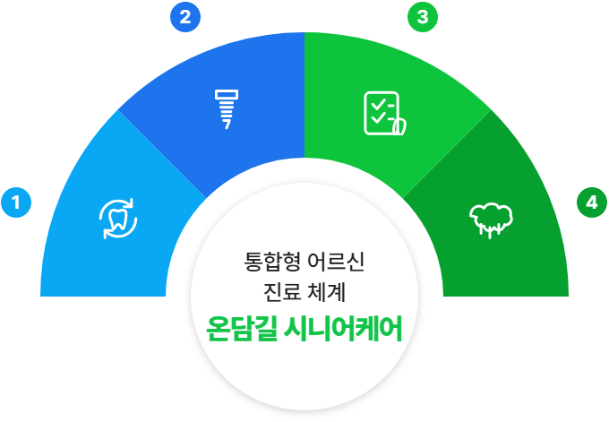
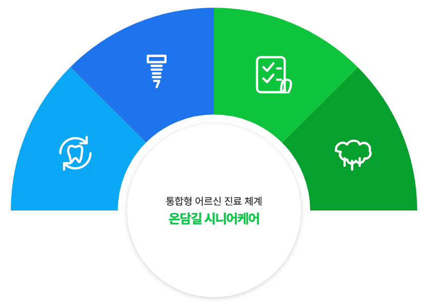
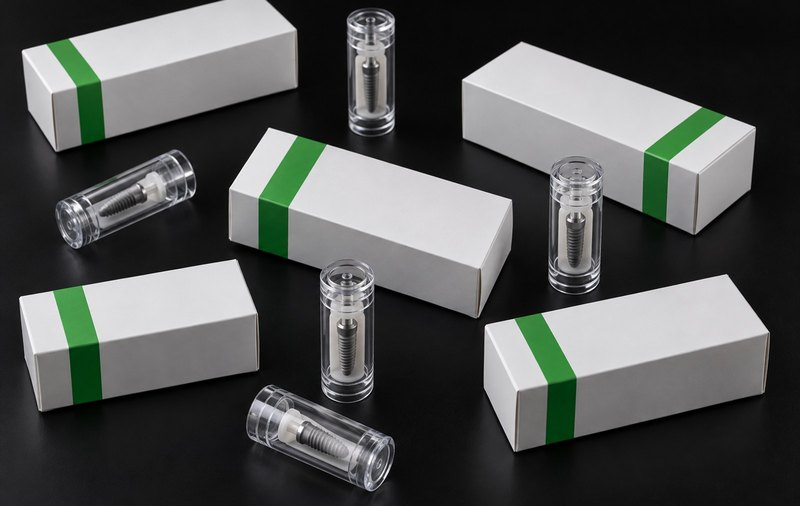
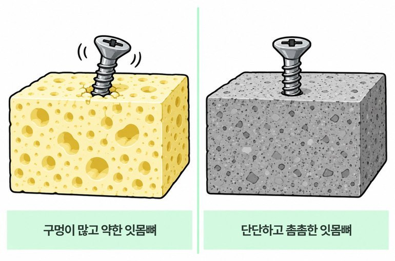
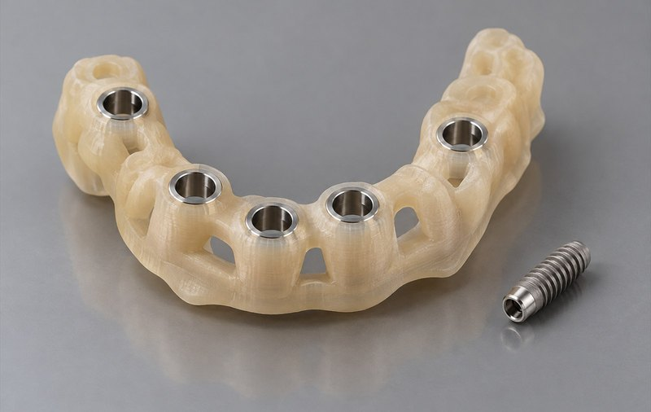

한국어 선택
한국어 선택 


어르신이 다시 편하게 웃도록,
온담길 시니어케어 임플란트
※ 위 장면은 상담과 진료 과정을 담았습니다. /
진료 결과와 부작용은 개인의 상태에 따라 달라질 수 있습니다.
통합형 어르신 진료 체계,
온담길 시니어케어란?
온담길의 어르신 진료는 임플란트 시술 하나로
끝나는 과정이 아닙니다.
어르신의 치아와 잇몸 상태를 오래 살피는
강남구 온담길치과의 통합형 어르신 진료 체계입니다.
중장년층과 고령의
어르신 세대를 가리키는
입안 건강관리
통합진료 체계

온담길 시니어케어 임플란트
어르신의 남은 치아와 잇몸을 먼저 살핀
고정체 위치와 보철 순서 결정
온담길 시니어케어 평생 관리 프로그램
고정체 시술과 보철 장착을 모두 마친 뒤에도
철저한 추적점검 과정
자연치아 오래 쓰기
남아 있는 치아를 먼저 살피는
온담길 시니어케어 치주치료 프로그램
온담길 시니어케어 구강관리 교육
촬영 장비로 확인하는 현재 치아·잇몸 상태와
입안 위생 관리 담당자의 집중 케어

1
자연치아 오래 쓰기
남아 있는 치아를 먼저 살피는
온담길 시니어케어 치주치료 프로그램
2
온담길 시니어케어 임플란트
어르신의 남은 치아와 잇몸을 먼저 살핀
고정체 위치와 보철 순서 결정
3
온담길 시니어케어 평생 관리 프로그램
고정체 시술과 보철 장착을 모두 마친 뒤에도
철저한 추적점검 과정
4
온담길 시니어케어 구강관리 교육
촬영 장비로 확인하는 현재 치아·잇몸 상태와
입안 위생 관리 담당자의 집중 케어
예전 모습을 참고 자료로 삼아
검사 결과로 진료 순서를 짜는 온담길 시니어케어 임플란트

온담길치과 실제 환자분들의
예전 모습 참고 이미지
임플란트 보철은 음식을 씹는 일 외에도
입술선과 얼굴 인상에 영향을 줍니다.
임플란트 시술 뒤 식사는 한결
편해졌지만,
입술 주변과 얼굴 비율이 어색해 보여
아쉬워하시는 분이 적지 않습니다. 보철의 모양과 관리 편의까지 살펴야 하는 이유입니다.
이런 불편은 각자의 입술선과 얼굴 비율에 어울리는
치아 모양까지 함께 살피지 못한 데서 올 수 있습니다.


씹기와 보철 모양을 함께 살피는
온담길치과 임플란트
온담길 임플란트 진료는 보철 장착 뒤의 생활까지 확인합니다.
예전 사진과 지금의 얼굴 비율을 참고해 치아와 입술선,
보철 형태가 서로 어울리도록 진료 순서를 짭니다.
입술선과 얼굴 비율을 함께 살피는
디지털 얼굴 균형 분석 장비
어르신의 남은 치아와 잇몸을 먼저 살핀
온담길 시니어케어 임플란트
온담길 시니어케어 임플란트는 온담길치과의
어르신 통합 진료 과정 안에서
검사부터 보철 점검까지 한 흐름으로 이어집니다.
중장년층의 남은 치아와 잇몸뼈, 복용약을 확인하고,
남길 수 있는 치아를 먼저 치료하면서
부족한 치아 부위에 알맞은 진료 순서를 정합니다.
온담길 시니어케어 상표 등록
‘온담길 시니어케어’는 온담길치과가 이름 붙인
어르신 통합 진료 과정의 고유 명칭입니다.
표기와 자료를 허가 없이 사용할 수 없습니다.


중장년층 이상 고령층의 치아 회복은,
왜 몸 전체 건강부터 확인해야 할까요?
중장년층은 혈당·혈압·심혈관계 질환과 복용약 등
지금의 건강 상태와
검사 결과를 한데 모아 진료 순서를 정해야 합니다.
개인의 복용약과 몸 상태에 따라 진료 순서와
진료 중 확인할 항목이 달라질 수 있어서
임플란트 시술에 영향을 줄 수 있는 사항을 미리 확인해야 합니다.
복용약 확인 없이 임플란트 일정을 잡아 걱정했던 분의 이야기
온담길 시니어케어 임플란트,
어르신을 고려한 차별화된 진료 체계
1. 현재 건강과 복용약까지 함께 살펴 정한 진료 순서
중장년층은 혈당·혈압·심혈관계 질환과 복용약 등
만성질환을 앓고 있거나
두 가지 이상의 약을 먹는
분이 적지 않습니다.
전신 건강과 어르신 진료 시 주의점을 함께 살피며,
현재 앓는 질환과 복용약을 문진한 뒤 필요한 협진과 진료 순서를 정합니다.
2. 마취 부담을 덜기 위한
진료 경험과 확인 절차
중장년층 치과진료에서는 건강 상태와 시술 범위에 맞춰 마취 방법과 사용량을 판단해야 합니다.
여러 임플란트 증례의 검사와 관리 기록을 바탕으로,
가능한 경우 잇몸 절개 범위를 줄이는 방법을 검토해
출혈과 마취 부담을 낮출 수 있는
진료 순서를 정합니다.
3. 어르신의 뼈 높이와 폭을 반영한
임플란트 재료 안내
임플란트 고정체는 턱뼈 안에 자리 잡아
그 위에 얹는 보철을 받쳐 주는 부품입니다.
온담길치과는 어르신 임플란트를 계획할 때
뼈 상태와 보철 계획에 맞는 고정체를 선택합니다.
-
국내 치의학 교육기관과 함께 연구해 온
임플란트 재료 안내- 처음 지지되는 힘을 살핀 형태
- 교합력 분산을 확인하는 구조
- 어르신마다 다른 뼈의 높이와 밀도를
반영한 고정체 형태

-

“임플란트는 처음에 단단히 자리 잡는지를
먼저 확인해야 합니다.”임플란트가 안정되지 않는 이유 가운데 하나는
나이가 들며 밀도와 부피가 줄어든 잇몸뼈에서는
고정체가 처음부터 충분히 지지되지 않을 수 있기 때문입니다.잇몸뼈의 밀도나 폭이 부족하면
검사 자료를 토대로 초기 지지력을 고려한 시술 계획을 세워야 합니다.
온담길치과에서는 CT로 잇몸뼈의 높이와 폭을 확인한 뒤
진료 계획에 맞는 규격과 형태의 임플란트 고정체를 고릅니다.
4. 디지털 분석 자료를 토대로 세운
온담길 시니어케어 임플란트 치료 계획
60세를 넘긴 어르신은
몸 상태와 회복 속도를 함께 살펴
몸에 부담이 되는 과정을 줄여
검사 결과를 토대로 순서를 정해야 합니다.
CT와 구강 스캔 자료를 토대로
임플란트를 놓을 자리와 각도, 필요한 수를
먼저 살펴 시술 계획을 잡습니다.
잇몸뼈와 신경 위치, 입안 구조를 함께 보며
필요하면 디지털 분석 자료를 더해
시술 계획을 더 세밀하게 다듬습니다.
-
- 디지털 분석 결과로 만드는
온담길 시니어케어 수술 가이드 - CT와 구강 스캔 자료로 정한 시술 계획에 맞춰
고정체의 위치와 방향을 시술 중 확인하도록 만든
개인별 수술 가이드를 필요한 경우 사용합니다. - 계획한 위치와 방향에 맞춘 고정체 배치
- 각 환자의 뼈와 치아 위치를 반영한 가이드 설계
- 상태에 따라 절개 범위를 조절해 회복 부담을 낮추는 방법 검토

- 디지털 분석 결과로 만드는
5. 고정체 배치 개수를 줄이는 온담길 시니어케어 임플란트
예전 교량 공사에서는 구조 계산과 재료 기술의 한계로 교각을
가까운 간격으로 만들었지만,
지금은 구조 계산과 재료가 발전해
기둥을 필요한 만큼만 세워도 됩니다.
임플란트에도 같은 원리가 적용됩니다.
컴퓨터 분석과 온담길치과의
여러 전악 임플란트 증례의
진료 기록을 참고해
고정체 배치 개수를 줄이면서도 완성도를
확보하는 방법을 검토할 수 있습니다.
6. 시술 당일 임시 보철 검토,
어떤 조건에서 검토할 수 있을까요?
온담길치과에서는 어르신 보철 제작 과정을 익힌 의료진과 기공 담당자가
입안 구조와 맞물림 자료에 맞춰 보철의 형태를 설계하고 제작 과정을 확인합니다.
초기 고정과 건강 상태가 허용되는 경우 시술 당일
임시 보철을 쓸 수 있는지 검사 단계에서 판단합니다.
온담길 시니어케어 임플란트
임시 보철 적용
여러 지역 의료진과 나누는
온담길 시니어케어 임플란트의 기술력
교육 과정에는 여러 지역 치과의사가 임시 보철과 전악 임플란트 등
온담길치과의 임플란트 검사와 계획, 관리 절차를 익히기 위해 참여합니다.
진료 중 축적한 임플란트 증례와 점검 기준을 나누고,
여러 지역 의료진이 참여하는 교육과 증례 회의를 통해
여러 증례에서 확인한 내용을 교육 시간에 공유합니다.
온담길치과 의료진이 쉬운 말로 설명하는 구강건강 정보
방문 전에 준비할 내용과 진료 뒤 주의할 점을 짧은 영상으로 안내합니다.
온담길 시니어케어 임플란트 진료 사례
※ 모든 진료는 개인에 따라 경과와 부작용이 다를 수 있습니다.
 상담 안내
상담 안내  전화 문의
전화 문의  카카오톡 문의
카카오톡 문의